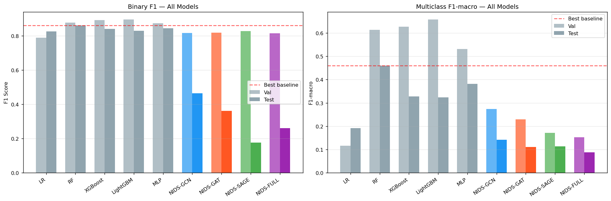

Phase 6
Final Evaluation & Conclusions
Complete comparison of all 9 models (5 baselines + 4 GNNs) on both tasks and both evaluation splits. Analysis of the val/test distribution shift, the UNK node problem, and recommendations for future work in graph-based network intrusion detection.
✓ Complete🏆 Full Binary Comparison — Test Set (attack ratio 55.06%)
| Model | Type | Accuracy | Precision | Recall | F1 | ROC-AUC | FPR |
|---|---|---|---|---|---|---|---|
| Random Forest | Baseline | 0.8233 | 0.7572 | 0.9997 | 0.8617 | 0.9691 | 0.3928 |
| MLP | Baseline | 0.7977 | 0.7314 | 0.9997 | 0.8448 | 0.9769 | 0.4498 |
| XGBoost | Baseline | 0.7911 | 0.7250 | 0.9999 | 0.8405 | 0.9745 | 0.4646 |
| LightGBM | Baseline | 0.7740 | 0.7093 | 0.9990 | 0.8296 | 0.9375 | 0.5017 |
| Logistic Regression | Baseline | 0.7702 | 0.7072 | 0.9942 | 0.8265 | 0.6485 | 0.5043 |
| NIDS-GCN Best GNN | GNN | 0.4800 | 0.5365 | 0.4090 | 0.4641 | 0.5836 | 0.4329 |
| NIDS-GAT | GNN | 0.4371 | 0.4815 | 0.2898 | 0.3618 | 0.5899 | 0.3824 |
| NIDS-FULL | GNN | 0.4006 | 0.4065 | 0.1928 | 0.2616 | 0.5655 | 0.3449 |
| NIDS-SAGE | GNN | 0.4046 | 0.3701 | 0.1160 | 0.1767 | 0.6020 | 0.2419 |
Gap: Best baseline (RF) outperforms best GNN (GCN) by ΔF1 = +0.398 and ΔAUC = +0.387 on the test set. On the validation set, the same gap narrows to ΔF1 = +0.067 — indicating GNNs learn competitive representations in-distribution but fail to generalise across the structural shift.
🏷️ Full Multiclass Comparison — Test Set
| Model | Type | Accuracy | F1-Macro | F1-Weighted |
|---|---|---|---|---|
| Random Forest | Baseline | 0.6862 | 0.4605 | 0.7295 |
| MLP | Baseline | 0.6389 | 0.3815 | 0.6938 |
| XGBoost | Baseline | 0.6118 | 0.3276 | 0.6450 |
| LightGBM | Baseline | 0.5877 | 0.3234 | 0.6324 |
| Logistic Regression | Baseline | 0.4053 | 0.1913 | 0.4053 |
| NIDS-GCN Best GNN | GNN | 0.3246 | 0.1423 | 0.3615 |
| NIDS-SAGE | GNN | 0.3234 | 0.1136 | 0.2820 |
| NIDS-GAT | GNN | 0.3255 | 0.1117 | 0.2998 |
| NIDS-FULL | GNN | 0.2872 | 0.0888 | 0.2382 |
📉 Distribution Shift Analysis
| Metric | Val (4.84% attack) | Test (55.06% attack) | Δ Drop | Insight |
|---|---|---|---|---|
| Best GNN binary F1 | 0.828 (SAGE) | 0.464 (GCN) | −0.364 | Catastrophic — UNK node eliminates graph advantage |
| Best baseline binary F1 | 0.895 (LightGBM) | 0.862 (RF) | −0.033 | Robust — edge features only, no graph dependency |
| Best GNN F1-macro | 0.274 (GCN) | 0.142 (GCN) | −0.132 | Moderate drop — some edge-feature signal survives |
| Best baseline F1-macro | 0.657 (LightGBM) | 0.461 (RF) | −0.196 | Larger drop than binary — multiclass inherently harder |
| Best GNN binary AUC | 0.983 (FULL) | 0.602 (SAGE) | −0.381 | Dramatic — ranking ability collapses without neighbours |
| Best baseline binary AUC | 0.9993 (XGBoost) | 0.975 (XGBoost) | −0.024 | Nearly stable across splits |

GNN vs Baseline — F1 Comparison (Val & Test)
The chart shows the dramatic reversal between val and test rankings. GNNs and baselines
are neck-and-neck on the validation set. On the test set, every baseline outperforms
every GNN by a wide margin. The crossing lines confirm this is not a model quality issue
but a generalisation setting issue: when the graph topology changes completely (UNK node),
GNNs lose their structural advantage entirely.

GNN ROC Curves — Val vs Test Degradation
The contrast between solid (val) and dashed (test) ROC curves makes the distribution shift
visually striking. Val curves hug the top-left corner (AUC ~0.98); test curves hover near
the diagonal (AUC ~0.58–0.60). A near-diagonal ROC curve indicates a model that cannot
reliably rank positive examples above negative ones — consistent with decision boundaries
learned on in-distribution IP pairs being completely irrelevant for UNK-node test flows.
💡 Project Conclusions
What Worked
- GNNs achieve val binary F1 = 0.82–0.83, within 7% of the best baseline, using graph structure effectively on in-distribution data.
- Graph construction pipeline: 51-node IP graph with 37-dim edge features and 11-dim node features correctly models the network topology.
- All 4 GNN variants converge reliably on the 1.6M-edge training graph with gradient checkpointing and HPO subsampling.
- Edge features carry strong discriminative signal — even GNNs operating near-randomly on test still achieve PR-AUC ~0.55 (slightly above the 0.55 random baseline).
- TTL-based features (
sttl,ct_state_ttl) are the strongest attack discriminators across all models — confirmed by both EDA and RF importance.
What Failed
- Test generalisation collapsed for all GNNs (test F1 < 0.47) due to the UNK node problem — all test flows map to a single unseen node with no meaningful embedding.
- Transductive training (standard GNN full-batch) cannot handle inductive scenarios where new nodes appear at inference time.
- GNN multiclass test F1-macro (0.09–0.14) is lower than even Logistic Regression (0.19) — graph structure actively hurts when it provides no signal.
- NIDS-FULL (most complex) performs worst on test — architectural complexity provides no robustness benefit under distribution shift.
- Rare classes (Worms, Shellcode, Analysis) remain near-undetectable for all models, both baselines and GNNs — a dataset-level challenge that cannot be solved by architecture alone.
Future Work
- Inductive GNNs: Use GraphSAINT, ClusterGCN, or SEAL — frameworks designed to handle unseen nodes at inference time by sampling local subgraphs rather than full-batch transductive training.
- Edge-only GNN: Remove node embeddings from the edge classifier input on test (use only
edge_attr) — this would make GNNs competitive with baselines on the UNK test set. - Node feature augmentation: Compute live UNK node features from test flow statistics in a sliding window rather than using a static training-time mean.
- Threshold calibration: Apply Platt scaling or isotonic regression to calibrate predicted probabilities at the test's 55% attack prevalence, recovering some F1 performance.
- Temporal graph learning: Model the time-evolving nature of IP behaviour with temporal GNNs (TGAT, TGN) — each IP node's embedding should evolve as new flows arrive.
- Few-shot rare class detection: For Worms/Shellcode/Analysis, use anomaly detection (One-Class SVM, isolation forest) or prototypical networks to improve rare attack recall.
Key Takeaways
- GNNs on IP traffic graphs are a promising but inductive-generalisation-limited approach for NIDS.
- The transductive vs inductive setting is the critical design choice — UNSW-NB15's test set specifically tests inductive generalisation (novel IPs), where standard GNNs fail.
- Random Forest remains the best all-round model for this dataset: robust to distribution shift, interpretable via feature importance, and requires no GPU.
- GNNs add value only when the graph structure is preserved at inference time — i.e., in monitoring settings where the same IP pool is known and the task is to classify new flows between known IPs.
- The val/test distribution shift in UNSW-NB15 (4.84% → 55.06% attack ratio) is a realistic and important benchmark — models that only report val metrics are likely over-estimating real-world performance.
📋 Project Summary
| Phase | Goal | Key Output | Status |
|---|---|---|---|
| Phase 1 — EDA | Understand dataset structure and attack distribution | 10 visualisations, eda_summary.json, 8 high-corr pairs identified | ✓ Complete |
| Phase 2 — Preprocessing | Clean, encode, split, and resample data | 37-feature matrices, SMOTE train set, chronological splits saved as .npy | ✓ Complete |
| Phase 3 — Graph | Build PyG graph from IP flows | 51-node graph, 1.6M train edges, 3 PyG .pt files + graph_stats.json | ✓ Complete |
| Phase 4 — Baselines | Train 5 classical ML models with HPO | Best binary: RF (F1=0.862 test); Best multiclass: RF (F1-macro=0.461 test) | ✓ Complete |
| Phase 5 — GNN Training | Train 4 GNN variants × 2 tasks on GPU | Best GNN binary: GCN (F1=0.464 test); 8 .pt models, gnn_results.json | ✓ Complete |
| Phase 6 — Evaluation | Compare all models, analyse shift, draw conclusions | Full comparison tables, distribution shift analysis, 4-part conclusions | ✓ Complete |
💾 All Project Artifacts
Models & Results
| File | Description |
|---|---|
outputs/models/lr_binary.pkl | Logistic Regression (binary) |
outputs/models/rf_binary.pkl | Random Forest (binary) |
outputs/models/xgb_binary.pkl | XGBoost (binary) |
outputs/models/lgbm_binary.pkl | LightGBM (binary) |
outputs/models/mlp_binary.pt | MLP (binary) state dict |
outputs/models/baseline_results.json | All baseline metrics |
outputs/gnn_output/nids_gcn_binary.pt | NIDS-GCN (binary) |
outputs/gnn_output/nids_gat_binary.pt | NIDS-GAT (binary) |
outputs/gnn_output/nids_sage_binary.pt | NIDS-SAGE (binary) |
outputs/gnn_output/nids_full_binary.pt | NIDS-FULL (binary) |
outputs/gnn_output/gnn_results.json | All GNN metrics |
Visualisations
| File | Description |
|---|---|
outputs/eda/class_dist.png | Binary class distribution |
outputs/eda/correlation_heatmap.png | Feature correlations |
outputs/eda/pca_tsne.png | Dimensionality reduction |
outputs/graph/degree_distribution.png | Node degrees |
outputs/models/roc_curves.png | Baseline ROC curves |
outputs/models/rf_importance.png | RF feature importance |
outputs/gnn_output/gnn_training_curves_binary.png | GNN loss/F1 curves |
outputs/gnn_output/gnn_roc_curves.png | GNN ROC curves |
outputs/gnn_output/gnn_vs_baseline.png | GNN vs baseline F1 |
outputs/gnn_output/gnn_perclass_f1.png | Per-class F1 comparison |
🔑 Final Project Verdict
- For this specific dataset and evaluation setting (transductive → inductive shift), classical tree ensembles (Random Forest) outperform GNNs by a large margin on test. RF achieves F1=0.862 vs GCN's 0.464 binary, and F1-macro=0.461 vs GCN's 0.142 multiclass.
- GNNs demonstrate competitive performance on the validation set, confirming they can learn meaningful graph representations when the IP neighbourhood structure is intact. The val AUC of 0.977–0.983 matches baseline AUC of 0.985–0.999.
- The core lesson: GNN generalisation requires inductive design. Transductive GNNs trained on a closed IP set fail when deployed on new IP subnets. Future NIDS work should adopt GraphSAINT, SEAL, or edge-only architectures that bypass node-identity dependence.
- The UNSW-NB15 test set is a particularly challenging inductive benchmark (1 unique IP pair, 51 disconnected components, 55% attack prevalence) — models reporting results only on the validation set significantly overstate real-world applicability.